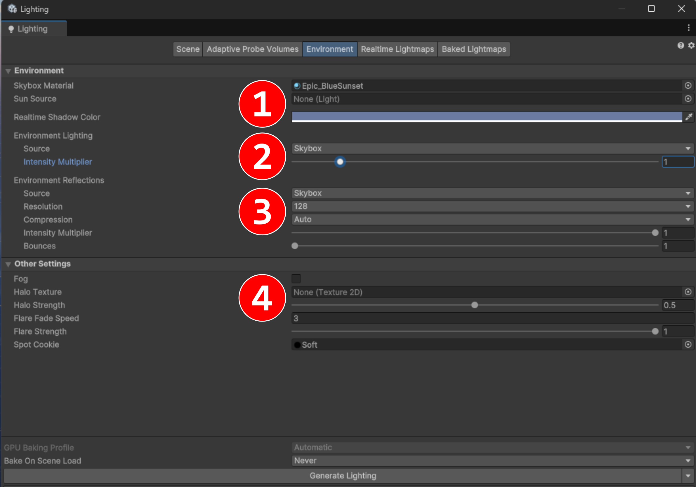

chapitre 2
Caméras, matériaux et illumination
Camera Component
Background Type
Projection
Field of View
Clipping Planes
Viewport Rect
Culling Mask
Output / Output Texture

Material Asset
Gère le rendu des GameObjects
Données : entiers, flottants, Textures, etc.
Calculs : effectués par le Shader

Light Component
3 modes : temps-réelles, pré-calculées, hybrides
4 types : Directional, Point, Spot et Area
Culling Mask

Lumière environnementale
1. Skybox
2. Lumière ambiante
3. Réflexions de l'environnement
4. Fog

Ombres
Shadow Map
Qualité (dans URP Asset)
Par GameObject
Par lumière